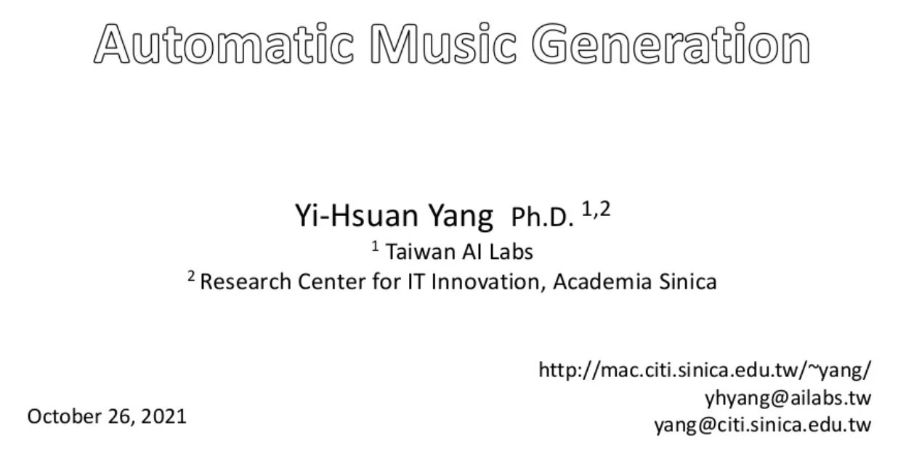

class: center, middle .title[Creative Coding and Software Design 3] <br/><br/> .subtitle[Week 13: RNN&co - music] <br/><br/><br/><br/><br/><br/> .date[Jan 2022] <br/><br/><br/> .note[Created with [Liminal](https://github.com/jonathanlilly/liminal) using [Remark.js](http://remarkjs.com/) + [Markdown](https://github.com/adam-p/markdown-here/wiki/Markdown-Cheatsheet) + [KaTeX](https://katex.org)] ??? Author: Grigore Burloiu, UNATC --- name: toc class: left # ★ Table of Contents ★ <!-- omit in toc --> 1. [Music generation with DL](#music-generation-with-dl) 2. [Selected gen-audio research](#selected-gen-audio-research) 3. [Misc](#misc) <!-- Comment out the next slide if you don't want the Table of Contents link --> --- layout: true .toc[[★](#toc)] --- class: center name: music-generation-with-dl # Music generation with DL [](https://www2.slideshare.net/affige/20211026-taicca-2-music-generation) .left-column[ <iframe width="100%" height="120px" src="https://www.youtube.com/embed/C0dOin79Hm0" title="YouTube video player" frameborder="0" allow="accelerometer; autoplay; clipboard-write; encrypted-media; gyroscope; picture-in-picture" allowfullscreen></iframe> ] .right-column[ <iframe width="100%" height="120px" src="https://www.youtube.com/embed/7XHucAvHNKs" title="YouTube video player" frameborder="0" allow="accelerometer; autoplay; clipboard-write; encrypted-media; gyroscope; picture-in-picture" allowfullscreen></iframe> ] --- ## Areas of interest symbolic (MIDI) vs **"raw" audio** - discrete / continuous -- online (real-time) vs offline - real-time: interactive? -- [ethics & aesthetics](http://jordipons.me/media/musicAI_ethics_aesthetics.pdf) --- name: selected-gen-audio-research # Selected gen-audio research .left-column[ 2016 - [SampleRNN](https://arxiv.org/abs/1612.07837) - [pytorch](https://www.datafied.world/create-audio-music-using-ai-94) ([DeepSound](https://github.com/deepsound-project/samplernn-pytorch)) - [tensorflow](https://github.com/rncm-prism/prism-samplernn) (PRiSM) ([colab](https://colab.research.google.com/gist/relativeflux/10573e9e1b10b1ff45e3a00099259741/prism-samplernn.ipynb)) 2018 - [WaveGAN](https://github.com/chrisdonahue/wavegan) - [online demo](https://chrisdonahue.com/wavegan/), [colab](https://colab.research.google.com/drive/1e9o2NB2GDDjadptGr3rwQwTcw-IrFOnm) - [NeuralFunk](https://drive.google.com/drive/folders/1gpG1SYGLqyJLaGTVo54Q8FCG4DSmhqDE) 2020 - [DDSP: Differentiable Digital Signal Processing](https://magenta.tensorflow.org/ddsp) 2020 - [Jukebox](https://openai.com/blog/jukebox/) - [colab](https://colab.research.google.com/github/anlexmatos/jukebox/blob/master/jukebox/Interacting_with_Jukebox.ipynb) [+](https://colab.research.google.com/github/sirbots/jukebox-the-continuator/blob/master/Jukebox_the_Continuator.ipynb) [+](https://www.youtube.com/watch?v=PXxGOl-ATa4) - [criticism](https://twitter.com/jesseengel/status/1256314503903318017?s=20) (Jesse Engel / Magenta) ] .right-column[ <iframe width="100%" height="150" src="https://www.youtube.com/embed/2xMhRwxXJTc" title="YouTube video player" frameborder="0" allow="accelerometer; autoplay; clipboard-write; encrypted-media; gyroscope; picture-in-picture" allowfullscreen></iframe> <iframe width="100%" height="150" src="https://www.youtube.com/embed/yoQ5nDHFxVI" title="YouTube video player" frameborder="0" allow="accelerometer; autoplay; clipboard-write; encrypted-media; gyroscope; picture-in-picture" allowfullscreen></iframe> <iframe width="100%" height="150" src="https://www.youtube.com/embed/5wn3htQl4JA" title="YouTube video player" frameborder="0" allow="accelerometer; autoplay; clipboard-write; encrypted-media; gyroscope; picture-in-picture" allowfullscreen></iframe> ] --- class: center ## 2021 - RAVE https://github.com/caillonantoine/RAVE <iframe width="100%" height="300" src="https://www.youtube.com/embed/_bN2FlSw18M" title="YouTube video player" frameborder="0" allow="accelerometer; autoplay; clipboard-write; encrypted-media; gyroscope; picture-in-picture" allowfullscreen></iframe> - https://github.com/Fyfe93/RAVE-audition --- class: center ## My research https://github.com/RVirmoors/rolypoly <iframe width="100%" height="300" src="https://www.youtube.com/embed/UHBIzfc5DCI?start=76" frameborder="0" allow="accelerometer; autoplay; clipboard-write; encrypted-media; gyroscope; picture-in-picture" allowfullscreen></iframe> - *Interactive Learning of Microtiming in an Expressive Drum Machine (2020)* - uses PyTorch seq2seq & transfer learning - TODO: better documentation & file structure, Max integration, modelling velocity etc --- name: misc class: left # Misc [Getting Started in ML-Audio](https://github.com/drscotthawley/ml-audio-start) resources (S. Hawley) Courses: [J. Pons](http://www.jordipons.me/apps/teaching-materials/), [P. Esling](https://esling.github.io/atiam-ml/) [AI Music Creativity](https://aimusiccreativity.org/) conferences - [AI Song Contest](https://www.aisongcontest.com/) [15.ai](https://15.ai/) - natural text-to-speech trained on minimal data [Magenta @ Google Brain](https://slideslive.com/38938169/magenta-empowering-creative-agency-with-machine-learning) [Score-free singing synthesis](https://twitter.com/ak92501/status/1447368509021986821?s=20) - [KaraSinger](https://jerrygood0703.github.io/KaraSinger/) (K-F. Liao) source separation: [demucs](https://github.com/facebookresearch/demucs), [spleeter](https://github.com/deezer/spleeter) - [more colabs](https://github.com/tugstugi/dl-colab-notebooks) - [transcription w/ transformers](https://magenta.tensorflow.org/transcription-with-transformers) ([colab](https://colab.research.google.com/github/magenta/mt3/blob/main/mt3/colab/music_transcription_with_transformers.ipynb)) - [fast.ai audio](https://github.com/drscotthawley/fastproaudio), [HackAudioPython](https://github.com/HackAudio/HackAudioPythonCode), [time alignment](https://www.youtube.com/watch?v=gsJiJimAgbI) ...